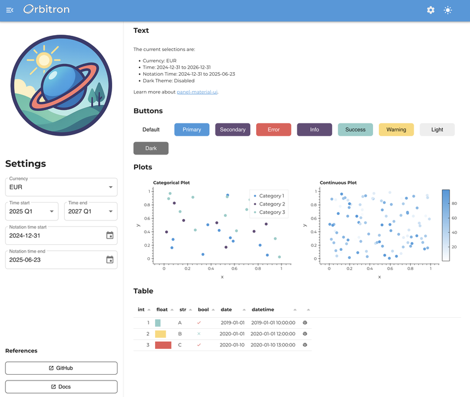

Apply Branding#
This guide demonstrates how to create a cohesive brand experience in your Panel Material-UI applications using the “Orbitron” brand example. You’ll learn how to structure your brand assets, configure consistent theming, and apply your brand across all components.

Overview#
The branding example shows a complete implementation of a branded Panel application with:
Custom color palettes for light and dark themes
Typography and visual styling
Brand asset management
Component theming
Responsive layouts with brand consistency
💡 Tip: You can find the complete working example in
examples/apps/branding/to reference alongside this guide.
1. Brand Architecture Overview#
Start by organizing your brand assets in a dedicated package structure:
your_app/
├── app.py # Main application
└── brand/ # Brand package
├── __init__.py
├── colors.py # Color definitions
├── mui.py # Theme configuration
└── assets/ # Brand assets
├── __init__.py
├── logo.png
├── favicon.ico
├── style.css
└── vision.png
This modular approach keeps your brand configuration separate from your application logic, making it easy to maintain and update. See the complete structure in the example.
2. Color System Design#
Define your brand colors using dataclasses for type safety and consistency:
# brand/colors.py
from dataclasses import dataclass
from typing import List
import panel_material_ui as pmui
@dataclass(frozen=True)
class ThemeColors:
"""Container for theme color definitions."""
primary: str = "#4099da"
secondary: str = "#644c76"
success: str = "#8ecdc8"
error: str = "#e85757"
warning: str = "#fdd779"
info: str = "#644c76"
# Define light and dark theme variants
LIGHT_THEME = ThemeColors()
DARK_THEME = ThemeColors(
primary=LIGHT_THEME.secondary,
secondary=LIGHT_THEME.primary,
)
Create utility functions for different visualization needs:
def get_categorical_palette(dark_theme: bool = False, n_colors: int = 20) -> List[str]:
"""Get a categorical color palette based on the theme."""
colors = DARK_THEME if dark_theme else LIGHT_THEME
palette = [colors.primary, colors.secondary, colors.success, colors.warning, colors.error]
if n_colors <= len(palette):
return palette[:n_colors]
return pmui.theme.generate_palette(colors.primary, n_colors=n_colors)
def get_continuous_cmap(dark_theme: bool = False) -> List[str]:
"""Get a continuous color map for heatmaps and gradients."""
base_color = DARK_THEME.primary if dark_theme else LIGHT_THEME.primary
background = "#222222" if dark_theme else "#ffffff"
return pmui.theme.linear_gradient(background, base_color, n=256)
📝 Reference: See the complete color system implementation in
brand/colors.py.
3. Theme Configuration#
Configure Material-UI themes with your brand colors and typography:
# brand/mui.py
import panel_material_ui as pmui
import panel as pn
from .colors import DARK_THEME, LIGHT_THEME
# Light theme configuration
LIGHT_THEME_CONFIG = {
"palette": {
"primary": {"main": LIGHT_THEME.primary},
"secondary": {"main": LIGHT_THEME.secondary},
"success": {"main": LIGHT_THEME.success},
"error": {"main": LIGHT_THEME.error},
"warning": {"main": LIGHT_THEME.warning},
"info": {"main": LIGHT_THEME.info},
},
"typography": {
"fontFamily": ("Montserrat", "Helvetica Neue", "Arial", "sans-serif"),
"fontSize": 16,
"fontWeight": 700,
"letterSpacing": 0.2,
"lineHeight": 1.5,
},
"shape": {
"borderRadius": 8,
},
"components": {
"MuiButtonBase": {
"defaultProps": {"disableRipple": True},
},
},
}
Apply the theme configuration to your components:
def configure():
"""Configure the complete theme for the application."""
# Set theme configuration
pmui.Page.param.theme_config.default = {
"light": LIGHT_THEME_CONFIG,
"dark": DARK_THEME_CONFIG,
}
# Add custom fonts
pmui.Page.config.css_files.append(
"https://fonts.googleapis.com/css2?family=Montserrat:wght@100..900&display=swap"
)
# Configure component defaults
pmui.Button.param.disable_elevation.default = True
📝 Reference: See the complete theme configuration in
brand/mui.py.
4. Asset Management#
Organize your brand assets with proper path resolution:
# brand/assets/__init__.py
from pathlib import Path
ROOT = Path(__file__).parent
def _absolute(path: str) -> str:
"""Convert relative path to absolute path string."""
return str(Path(ROOT / path).resolve())
# Brand assets with absolute paths
FAVICON_PATH = _absolute("favicon.ico")
LOGO_PATH = _absolute("logo.png")
VISION_PATH = _absolute("vision.png")
# Load custom CSS
css_file = ROOT / "style.css"
RAW_CSS = css_file.read_text(encoding="utf-8") if css_file.exists() else ""
Configure your page with brand assets:
def configure():
# Brand assets configuration
pmui.Page.param.logo.default = LOGO_PATH
pmui.Page.favicon = FAVICON_PATH
pmui.Page.meta.name = "Your Brand Name"
# Add custom CSS
if RAW_CSS:
pmui.Page.config.raw_css.append(RAW_CSS)
📝 Reference: See the asset management implementation in
brand/assets/__init__.py.
5. Component Theming#
Apply your brand consistently across all Panel Material-UI components:
# Configure component-specific styling
pn.pane.Image.stylesheets = ["img {border-radius: 8px}"]
pn.widgets.Tabulator.param.theme = "materialize"
6. State Management Pattern#
Use Panel’s reactive system to manage theme state across your application:
import param
from panel.viewable import Viewer
class AppState(Viewer):
"""Application state management with theme support."""
dark_theme = param.Boolean(default=False, label="Dark Theme")
currency = param.Selector(default="EUR", objects=["EUR", "GBP", "USD"])
def __init__(self, **params):
super().__init__(**params)
# Sync with Panel's theme configuration
self.dark_theme = pn.config.theme == "dark"
def __panel__(self):
"""Render state controls."""
return pmui.Column(
pmui.Switch.from_param(self.param.dark_theme),
pmui.Select.from_param(self.param.currency),
)
📝 Reference: See the complete state management in
app.py.
7. Responsive Layout Structure#
Create a consistent branded layout using Panel Material-UI components:
def create_app():
"""Create the main application with branded layout."""
state = AppState()
# Create branded page layout
page = pmui.Page(
sidebar=[
pn.pane.Image(LOGO_PATH, sizing_mode="scale_width"),
pmui.Column(
"# Settings",
state,
"### References",
pmui.Button(
name="Documentation",
href="https://panel-material-ui.holoviz.org/",
target="_blank",
variant="outlined"
),
),
],
sidebar_width=400,
main=[
pmui.Container(
"## Welcome to Your Branded App",
"Your main content goes here...",
)
],
)
# Sync theme state
state.dark_theme = page.param.dark_theme
return page
8. Data Visualization Branding#
Apply your brand colors to charts and data tables:
def create_branded_chart(dark_theme: bool = False):
"""Create a chart with brand colors."""
df = get_sample_data()
cmap = get_categorical_palette(dark_theme=dark_theme, n_colors=3)
return df.hvplot.scatter(
x="x", y="y",
color="category",
cmap=cmap,
height=350,
responsive=True,
title="Branded Chart",
)
def create_branded_table():
"""Create a table with brand styling."""
df = get_sample_data()
# Custom formatters using brand colors
formatters = {
"progress": {
"type": "progress",
"color": [LIGHT_THEME.success, LIGHT_THEME.warning, LIGHT_THEME.error],
}
}
return pn.widgets.Tabulator(
df,
formatters=formatters,
theme="materialize",
sizing_mode="stretch_width",
)
📝 Reference: See visualization examples in
app.py.
9. Deployment Considerations#
Configure your application for consistent branding across deployments:
def configure_deployment():
"""Configure deployment-specific brand settings."""
# Custom disconnect notification
pn.config.disconnect_notification = (
"Connection lost. Please refresh to reconnect to your branded app."
)
# Ensure theme persistence
pn.config.theme = "light" # or "dark" as default
# Configure caching for assets
pn.config.static_dirs = {"assets": "brand/assets"}
def main():
"""Main application entry point."""
# Apply brand configuration
from brand.mui import configure
configure()
# Configure deployment
configure_deployment()
# Create and serve app
app = create_app()
app.servable()
if pn.state.served:
main()
Complete Example#
The complete Orbitron brand example demonstrates all these concepts working together. To run it:
Git clone the project
git clone https://github.com/panel-extensions/panel-material-ui.git
Navigate to the examples directory:
cd examples/apps/branding
Run the application:
panel serve app.py --show
The example includes:
✅ Complete brand package structure
✅ Light/dark theme support
✅ Branded components and layouts
✅ Interactive data visualizations
✅ Responsive design
✅ Asset management
📁 Complete Code: Explore the full implementation in
examples/apps/branding/.
Next Steps#
Customize the color palette for your brand
Replace the example assets with your own logos and icons
Adapt the typography to match your brand guidelines
Extend the theme configuration for additional component customization
Test your branded application across different screen sizes and themes